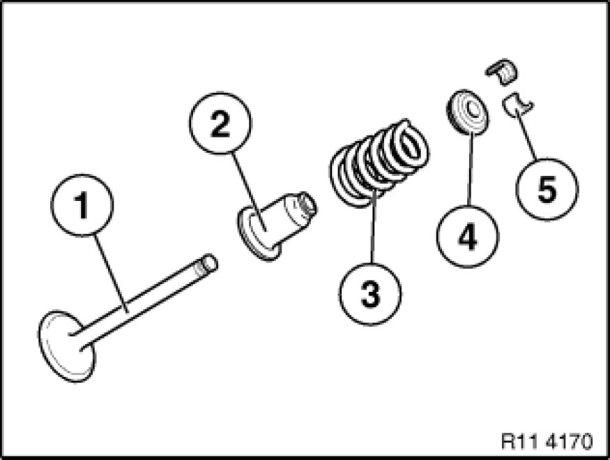

Valve: Service and Repair
11 34 552 - Removing and installing/replacing all valves (N52K)

Special tools required:
- 11 4 480 11 4 480 Oddments Tray

Necessary preliminary tasks:
- Remove cylinder head Removal and Replacement
- Remove intermediate lever Removing and Installing/Replacing Intermediate Levers
- Remove eccentric shaft Removing and Installing/Replacing Eccentric Shaft
- Remove inlet camshaft Removing and Installing/Replacing Inlet Camshaft
- Remove exhaust camshaft Removing and Installing/Replacing Exhaust Camshaft
- Remove cam followers Service and Repair
- Remove valve springs Service and Repair
- Remove valve stem seals Service and Repair

Arrangement:
1) - Valve
2) - Valve stem seal with lower spring plate
3) - Valve spring
4) - Upper spring plate
5) - Valve tapers
If the valves are to be reused, they must be placed in neat order in special tool 11 4 480.

Assemble engine.
Check function of DME; if necessary, readjust uniform mixture distribution.